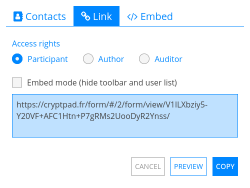

Формы¶

Роли¶
В Формах используются те же функции совместной работы и конфиденциальности, что и в других приложениях CryptPad. При этом в них есть свои особенности в плане использования: например, кто-то, отвечая на форму, должен иметь возможность редактировать свои собственные ответы, но не ответы других пользователей или саму форму. По этой причине Права доступа при совместном использовании формы отличаются от других приложений. Формы имеют 3 разные роли:
Автор: может редактировать вопросы и настройки формы.
Аудитор: может просматривать ответы на форму независимо от того, являются ли они общедоступными.
Участник: может отвечать на форму и просматривать ответы только после их публикации автором.
Чтобы поделиться формой с определенной ролью, например, чтобы отправить её участникам, выберите роль в Поделиться перед выбором контактов или копированием ссылки.
Примечание
Список пользователей, чат и оповещения о пользователях, присоединяющихся к сеансу совместной работы, отключаются, когда участник отвечает на форму. Это делается для того, чтобы не создавалось впечатление, что кто-то наблюдает, пока он отвечает.
Редактирование формы¶
Чтобы добавить вопрос, используйте меню Добавить после последнего вопроса или между каждыми двумя вопросами.
Чтобы удалить вопрос, используйте кнопку Удалить на вопросе, который нужно удалить.
Элементы¶
Описание¶
Добавьте текст в форму, используя синтаксис Markdown.
Зарегистрированные пользователи
Чтобы добавить изображение из CryptDrive или загрузить новое, используйте значок на панели инструментов.
Разрыв страницы¶
Разделите форму на страницы. Отображается только для участников.
Вариативная часть¶
Выбор and Флажок можно использовать для отображения или скрытия дополнительного раздела с вопросами.
В редакторе форм чтобы добавить Вариативную часть - используйте кнопки Добавить между вопросами или список в нижней части формы.
Убедитесь, что перед разделом стоит хотя бы один Выбор или Флажок (в противном случае появится подсказка). Только вопросы, размещенные перед разделом, будут доступны для использования в условиях.
Добавьте содержимое (текст описания, вопросы) в раздел, используя Добавить или перетащив вопросы в область раздела.
Установите некоторые условия, используя меню выбора. Все условия И должны быть истинными вместе, только одно из условий ИЛИ должно быть истинным.
В отображении для участника опроса раздел будет отображаться только в том случае, если условия верны.
Типы вопросов¶
Текст¶
Response: one line of text
Options:
Текстовый тип: текст, число, ссылка или электронная почта
Примечание
В случае ссылки и электронной почты вопрос выделяется красным цветом и пользователю отображается сообщение об ошибке, если его ответ не соответствует требуемому формату.
Абзац¶
Response: multiple lines of text
Options:
Максимальное количество символов: ограничено (по умолчанию 1000)
Выбор¶
Response: one choice from the list
Options:
кнопка Добавить вариант
Возьмите рукоятку и перетащите её, чтобы изменить порядок вариантов
Удалить вариант с помощью
Таблица вариантов¶
Response: one option choice per item
Options:
кнопки Добавить вариант и Добавить элемент
Возьмите рукоятку и перетащите, чтобы изменить порядок элементов и вариантов
Удалить элемент или вариант с помощью
Дата¶
Response: pick a date and time
Флажок¶
Response: multiple choices from the list
Options:
Максимальное количество выбираемых вариантов
кнопка Добавить вариант
Возьмите рукоятку и перетащите её, чтобы изменить порядок вариантов
Удалить вариант с помощью
Таблица флажков¶
Response: multiple choices for each item
Options:
Максимальное количество выбираемых вариантов (для каждого элемента)
кнопки Добавить вариант и Добавить элемент
Возьмите рукоятку и перетащите, чтобы изменить порядок элементов и вариантов
Удалить элемент или вариант с помощью
Нумерованный список¶
Response: order of preference for the listed options
Options:
кнопка Добавить вариант
Возьмите рукоятку и перетащите её, чтобы изменить порядок вариантов
Удалить вариант с помощью
Condorcet:
Начиная с версии 5.3, ответы могут отображать результаты с помощью метода Кондорсе. Вы можете выбрать Schulze или Ranked Pairs, чтобы отобразить победителя. В деталях также будет указано количество матчей, выигранных каждым кандидатом.
Опрос¶
Response: Yes, No, or Acceptable for each of the proposed options
Option types:
Текст
кнопка Добавить вариант
Возьмите рукоятку и перетащите её, чтобы изменить порядок вариантов
Удалить вариант с помощью
День
Выберите варианты дат, щелкнув их в календаре
Время
Нажмите на вариант, чтобы выбрать дату и время в календаре
Нажмите «Добавить несколько дат и времени», чтобы выбрать несколько вариантов и используйте Добавить все, чтобы добавить сразу все выбранные варианты.
Настройки формы¶
Используйте 3 кнопки вверху для быстрого доступа к:
Ответы (количество): переключает на страницу ответов
Предварительный просмотр формы: открывает ссылку участника
Copy public link: Copies the participant link
Примечание
Чтобы поделиться ссылкой автора на форму (с правами на редактирование), используйте меню Поделиться на панели инструментов.
Дата окончания¶
Дата, после которой форма будет закрыта для новых ответов
Используйте кнопку Установить дату закрытия, чтобы выбрать дату в календаре
Если установлена дата закрытия, используйте Удалить дату закрытия, чтобы удалить ее.
Анонимизировать ответы¶
Все ответы анонимны, независимо от того, вошли ли они в учетную запись CryptPad. Если этот флажок не установлен, участники, вошедшие в систему, по-прежнему могут отвечать анонимно, если разрешен гостевой доступ (см. ниже).
Гостевой доступ¶
Заблокировано: только пользователи, вошедшие в свою учетную запись CryptPad, могут отвечать на форму.
Разрешено: незарегистрированные пользователи могут отвечать, вошедшие пользователи могут отвечать анонимно.
Редактирование после отправки¶
Только один раз: участники могут ответить на форму только один раз и не могут изменить или удалить свои ответы после их отправки.
Один раз и отредактировать/удалить: участники могут ответить на форму только один раз, но им разрешено изменять или удалять свои ответы после их отправки.
Многократно: участники могут отвечать на форму несколько раз, но не могут изменять или удалять свои ответы после их отправки.
Многократно и редактировать/удалять: участники могут отвечать на форму несколько раз и могут изменять или удалять свои ответы после их отправки.
Примечание
Обратите внимание, что если гостевой доступ разрешен, незарегистрированные пользователи могут по-прежнему отвечать несколько раз на форму «Только один раз», если они откроют ее в приватном окне веб-браузера или очистят файлы cookie браузера и т. д.
Опубликовать ответы¶
Позволяет участникам, отправившим ответы в форму, просматривать ответы. После включения этот параметр публикует все прошлые и будущие ответы.
Предупреждение
После того как ответы станут общедоступными, их нельзя снова сделать приватными.
Финальное сообщение¶
Добавьте особое сообщение, которое будет отображаться после того, как участники отправят форму.
Цветовая тема¶
Выберите фон и цвет выделения для формы.
Ответы¶
Уведомления о новых ответах отправляются _владельцу_ формы через встроенные уведомления.
Расширенные варианты использования¶
Анонимные ответы со списком доступа¶
Чтобы провести анонимный опрос известной группы пользователей, функцию анонимных ответов можно объединить с Список доступа.
Чтобы получить доступ к форме, участники должны войти в учетную запись, которая находится в списке доступа (либо напрямую, либо через команду, в которую они входят).
Если в форме разрешены анонимные ответы, участники могут отвечать анонимно, а список доступа гарантирует, что они принадлежат определенной группе пользователей.
Импорт/Экспорт¶
Form documents themselves can be exported and imported in JSON format.
To export responses, from the Responses page, you have two possibilities:
as a CSV or JSON file use the EXPORT button
as a Spreadsheet that can be added to your drive with the EXPORT TO SHEET button
Примечание
The Spreadsheet document will automatically be populated with the data from your form at the time you create it. However, due to how end-to-end encryption works, the spreadsheet content won't be automatically updated with new responses as they arrive.